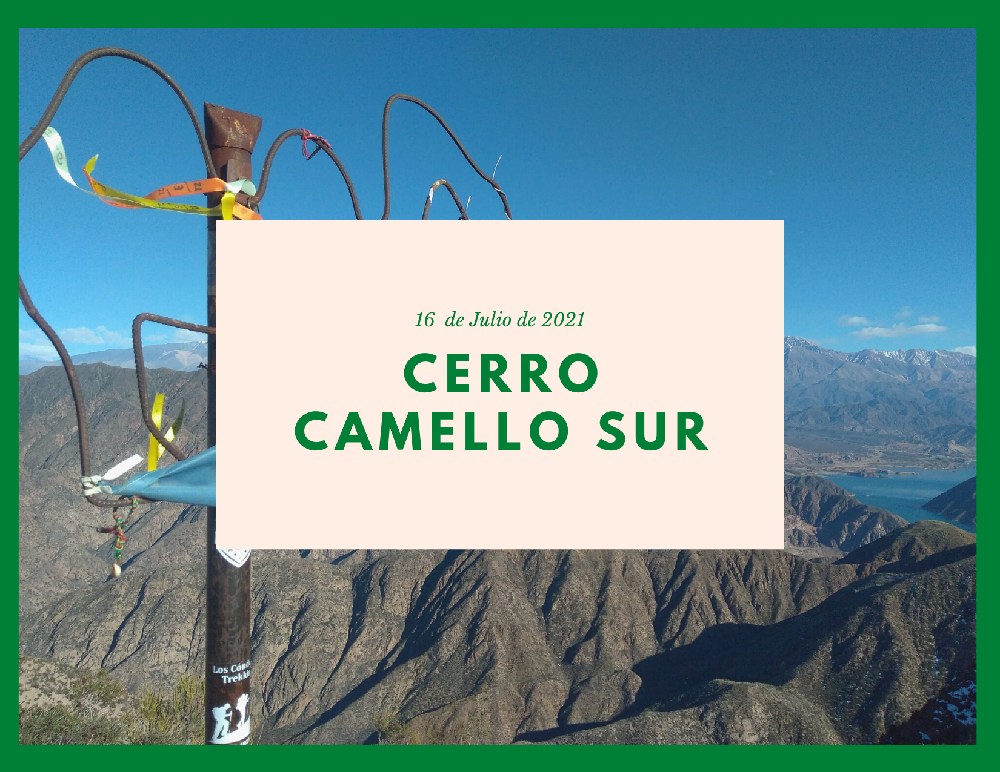
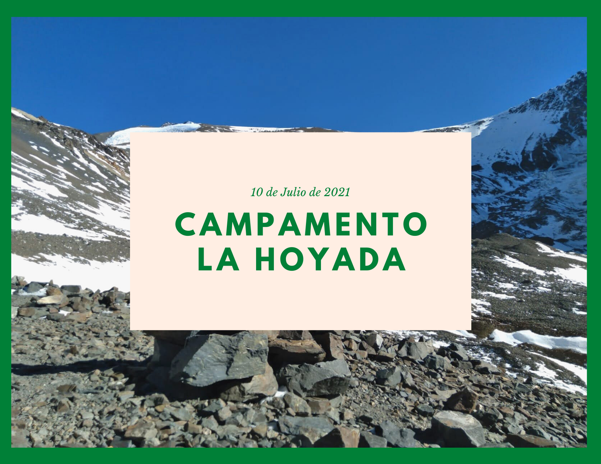
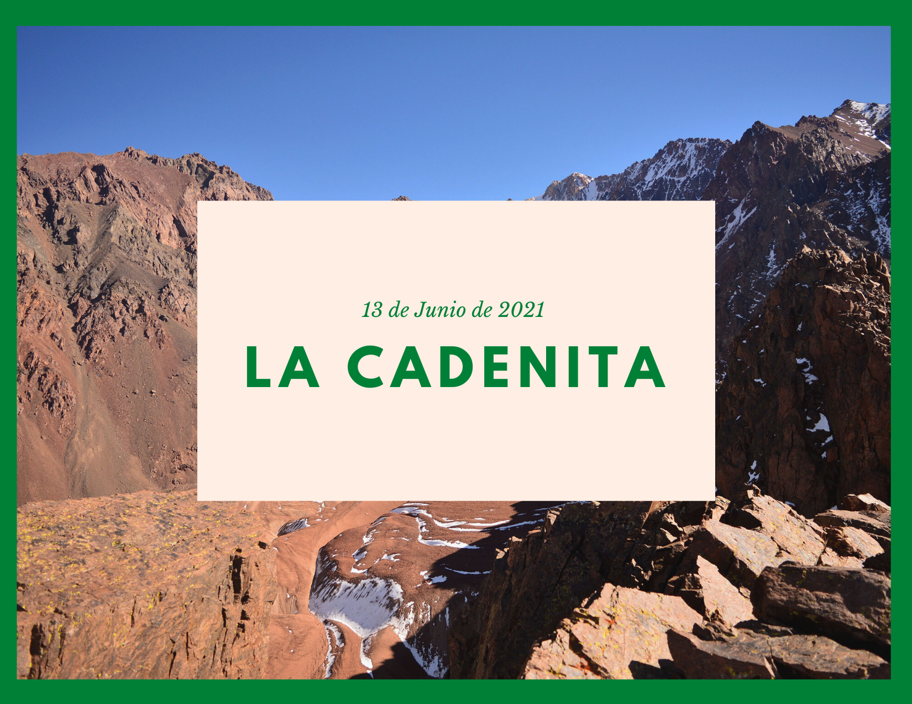
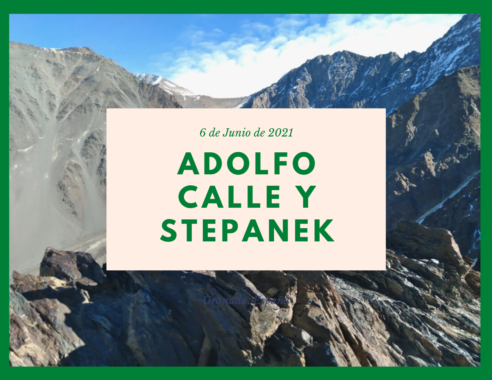
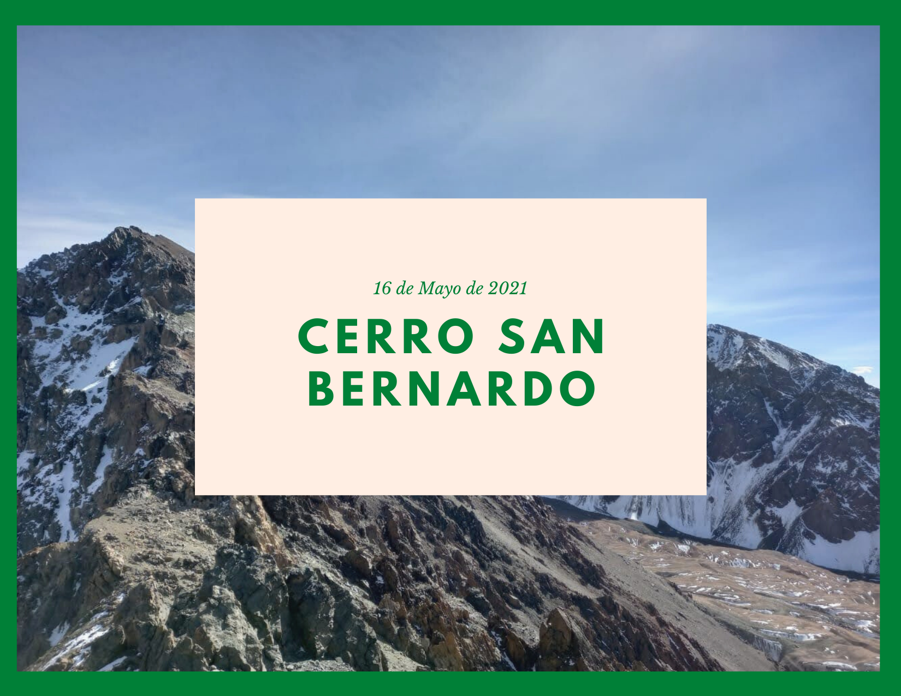
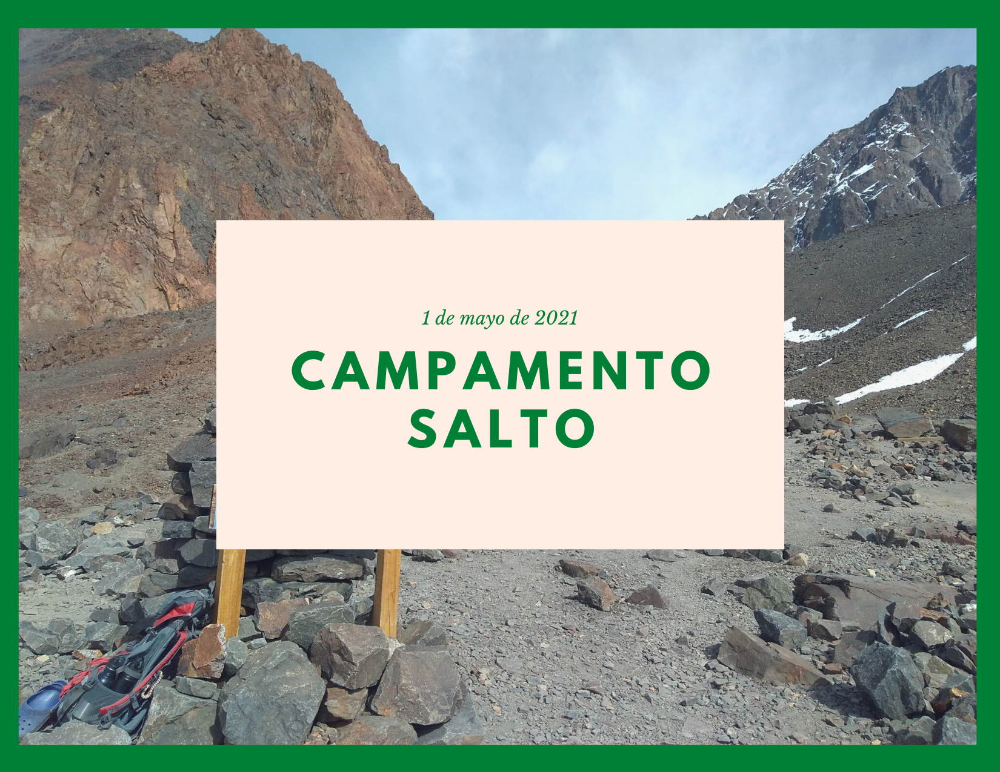

Cerro Camello Sur
Publicado el 16 de Julio de 2021
El retorno a la precordillera, uno de los cerros con mejores vistas hacia el lago Potrerillos y completamente todo el Cordón Del Plata. Senderos con nieve y hielo hicieron aún más divertida la aventura, que con pronósticos de zonda , culminó con ricos mates en compañía del Camello de Hierro.

Leer más...
Volver arriba
Campamento La Hoyada(4670 msnm) en el día.
Publicado el 8 de Julio de 2021
Salida condicionada en tiempo por la final de la Copa America. Once horas de caminata por la Quebrada del Infiernillo alcanzando los casi 1700 metros de desnivel para llegar al último campamento que se utiliza para los intentos a los Cerros Plata, Vallecitos o Lomas Amarillas.

Leer más...
Volver arriba
De las Morrenas Coloradas a la Cadenita
Publicado el 13 de Junio de 2021
Día claro, SIN NUBES, con todo lo que eso significa para este recorrido. Con ruta descargada y todo, la idea era hacer las Morrenas Coloradas pero nos inclinamos por hacerle frente a este clásico del Cordón del Plata hasta el final. Vale la pena leer este artículo ya que se resalta el especial respeto que hay que tenerle a este pegue, que , acompañado con ricos bizcochos hechos por mi compañera Gianina (quien además es especialista en la fotografía) terminó con ambos pidiendo llegar al auto para descansar las piernas.

Leer más...
Volver arriba
Cerros Adolfo Calle 4280 msnm Y Stepanek 4194 msnm(2)
Publicado el 6 de Junio de 2021
Día de doble cumbre con el team en el Parque Provincial Cordón del Plata.
Hermosa jornada con un amanecer imponente y cielos sin nubes.

Leer más...
Volver arriba
Cerro San Bernardo 4156 msnm (Cumbre)
Publicado el 16 de Mayo de 2021
Sábado de Trekking en uno de los cerros catalogados como cucos en el Parque Provincial Cordón del Plata.
Inicio de ascenso con terreno normal hasta encarar el filo con complicaciones por hielo y superficies resbalosas. Cumbre con cielo descubierto y vistas maravillosas a las demas cumbres. Vuelta con muchas caídas y golpes pidiendo ayuda para Bengué.

Leer más...
Volver arriba
Trekking hasta el Campamento Salto de agua 4200 msnm
Publicado el 1 de Mayo de 2021
Festejo del día del trabajador en las alturas.
Un trekking que en principios tenía planes de ser hasta el Campamento La Hoyada, pero por condiciones físicas de altura y problemas climáticos fue hasta el Campamento Salto. Fin de la jornada con cuerpos extenuados pero satisfechos volviendo a Mendoza para terminar de festejar nuestro día.

Leer más...
Volver arriba
Cerro Ponderado 2636 msnm y Vizcacheras 2688 msnm
Publicado el 17 de Abril de 2021
Día maratónico por la precordillera mendocina.
Muy linda salida a dos de los cerros mas altos del Cordón de Cacheuta, ingresando por la Quebrada de los Berros.
Senderismo recorriendo típicos paisajes de Precordillera mendocina, terminando nuestro día de montaña con las linternas frontales encendidas y esquivando las queridas rosas mosquetas que desde hace un tiempo son las protagonistas en este tipo de caminatas.
 Leer más...
Volver arriba
Leer más...
Volver arriba